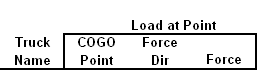
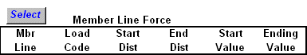

Live Load Definition
 Description
This entry is one of the two entries that describe the live load forces that are associated with a Truck. Truck loads include these stationary loads in addition to the moving loads specified in the Truck Definition entry form. Use the same name on this entry as on the :ref: Truck Definition` entry to combine stationary loads with moving loads for a single truck definition.
Forces can be applied to member lines and COGO points explicitly. Use this entry sheet to describe either a “Load at Point” or a “distributed member load” applied to a member line.
A full length uniform load can easily be applied by just entering the a Start Value and leaving the End Value, Start Distance, and End Distances blank.
Parameters
COGO Point
If this entry is being use to describe a point load, then specify the point where the force will be applied. Member loading does not use this entry.
Force Dir
Forces are applied in the global coordinate system. Use one of the following six direction codes: FX, FY, FZ, MX, My, or MZ. Note that unlike the member loads, the sense of these loads is consistent with the directions of the global coordinate system. Member loading does not use this entry.
Force
Enter the force in units of Kips and Feet. Member loading does not use this entry.
Mrb Line
Specify which member line to apply this load.
Load Code
Loads are applied to the major local axis of the member. Unless changed by the user, the Y direction is up and the Z direction is to the right when looking up station. For convenience, the Y forces are negated so that a positive value will apply a downward forces. Use the following codes to apply point, linear, and moment forces:
PY
Magnitude of downward point load.
PZ
Point Load in right direction when looking up station.
LY
Linear downward distributed load applied along a member.
LZ
Linear right direction distributed load applied along a member.
MY
Moment about the local Y axis. Looking down on the bridge, this load will be in the counterclockwise direction.
MZ
Moment about the local Z axis.
Start Dist
Distance from start of member line. Use to specify location of point or moment forces, and beginning of linear load.
End Dist
Distance from start of member line. Use to specify ending location of linear load.
Start Value
Point or moment force value, or starting linear load.
Ending Value
Ending force value for linear load.
Description
Optional description.